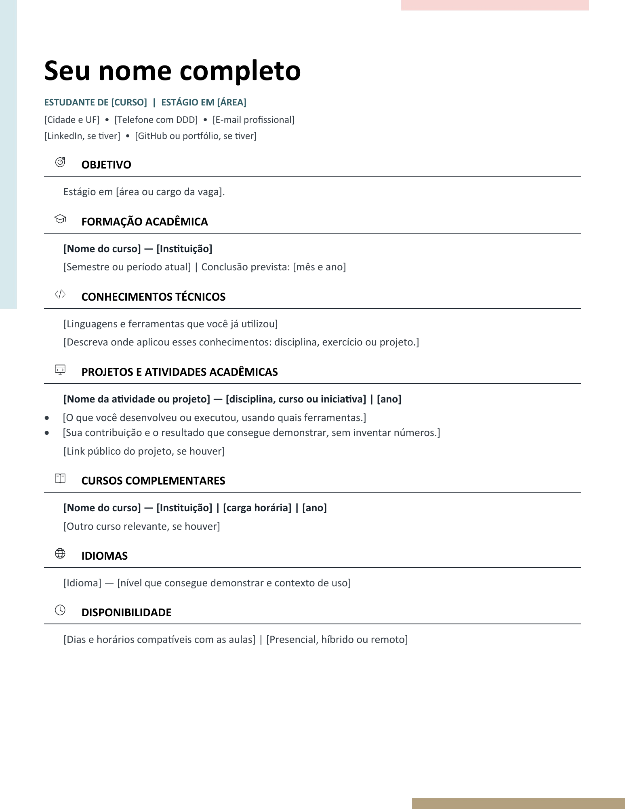
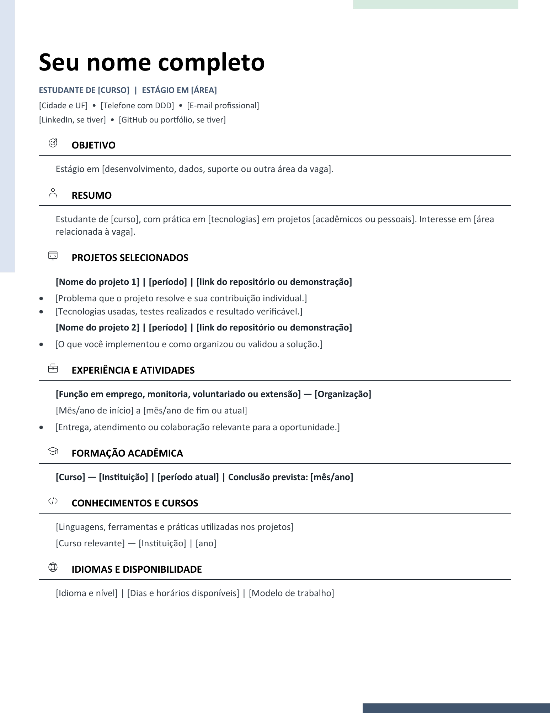

MODELO 01 · EDITÁVELPrimeiro estágio
Para organizar sua formação, conhecimentos técnicos, cursos e primeiras atividades acadêmicas.
- Espaço para um projeto ou atividade
- Disponibilidade e previsão de conclusão
SEU PRÓXIMO PASSO EM TECNOLOGIA
Estágios em Juiz de Fora e remotos,
com candidatura direto na empresa.
Carregando oportunidades…
PREPARE SUA CANDIDATURA
Você pode mostrar o que sabe com disciplinas, projetos e atividades da faculdade, mesmo antes do primeiro emprego.

MODELO 01 · EDITÁVELPara organizar sua formação, conhecimentos técnicos, cursos e primeiras atividades acadêmicas.

MODELO 02 · EDITÁVELPara quem já tem projetos pessoais ou acadêmicos e quer explicar melhor suas contribuições.
Como usar: abra o DOCX no Word, LibreOffice ou Google Docs. Substitua os campos entre colchetes, apague as seções que não se aplicam e revise o documento. Antes de enviar, confira o formato solicitado pela vaga; exporte em PDF quando aceito. Os modelos têm texto editável, ícones e detalhes de cor. Os downloads são gratuitos e não exigem cadastro.
Para descrever um projeto: use a estrutura “Desenvolvi [o quê] com [tecnologias], sendo responsável por [sua contribuição]. Validei com [teste ou resultado real]”. Preencha apenas com experiências verdadeiras.
Leitura de apoio: guia de currículos do MIT (em inglês) ↗. Adapte o conteúdo à sua trajetória e às instruções de cada seleção.
DA BUSCA À CANDIDATURA
O Nerdin e outros portais ajudam a descobrir anúncios. As vagas são conferidas nas páginas das empresas e em suas plataformas oficiais de recrutamento. O botão de candidatura leva à empresa, sem passar por agregadores.
A rotina está programada para 8h17, no horário de Brasília, sujeita a atrasos do GitHub. Prazos encerrados e falhas de verificação aparecem separados. Bancos de talentos são cadastros para oportunidades futuras.